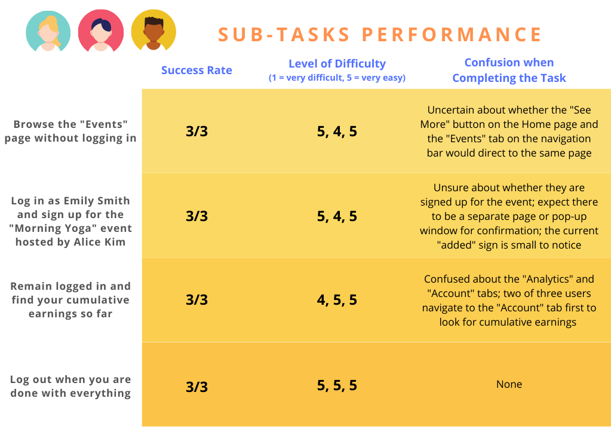

Iterative Design
Mockup for Reach.live

Iterative prototyping is an essential part of creating user interfaces. In this group project, my teammates and I designed an interface for a startup from scratch using only their concept. We did not use anything they’ve already built such as logo, images, or content. Afterwards, we iterated on our design based on feedback from classmates and an industry critic, and tested our final prototype on real users through usertesting.com.
Timeline:2 weeks
Figma, VS Code
CS1300 UIUX Iterative Design Group Project
Our selected startup is Reach.live and we referred to this summary from their Y-Combinator Demo: “Lifestyle creators looking to monetize live content like yoga or cooking classes often have to resort to multiple platforms. Reach.live aims to put all of them together: storefront, scheduling, payments, subscriptions, donations, and even the video hosting.”
Creators can discover and sign up for events hosted by creators in categories such as food, fitness, tech, and more.


Host events, where creators can host their own events and customize parameters ranging from category, time, to ticket price.
Event analytics, where creators can gain detailed insights into their earnings breakdown and data from past events they have hosted.
Understand the problClick this link to view prototype on external browser
Understand-> Sketch-> Wireframe-> High Fi ITERATIONS-> Interviews-> CONCLUSION
Each member of our group drew a set of sketches for at least three different pages: home page, event page, and analytics page. Our design for the event page differed a lot. Member 4’s design only showed the categories of the event to the users when they landed on the event page, and the users would find out the information about the events after they clicked on the category they are interested in. Member 1’s design showed the featured events of each category on the event page. In contrast, Member 3’s design only showed a list of the events of the default category (for example, fashion), and it would present the events in other categories after users clicked on the corresponding filters. Member 2’s designed the event page from the point of creators. Creators could edit event information and see attendees information on the page.

Without logging in, users could only see the Home and Explore Events pages. They could only see the remaining pages of the website after logging in, as we believed this design choice would prompt more users to register for the site. This way, more users would be likely to become loyal to Reach.live as the company could then potentially reach out to them through email advertisements. Moreover, since the company is in its startup stage, we believed having more loyal users would be beneficial both in terms of scale and profitability.
The Home page contains several vertically stacked sections, each showcasing a different aspect of the company. We all agreed that Reach.live is a platform for creators to both host and participate in events, and strived to show this by displaying information relating to these two aspects. These include sections of discover events, host events, monetize events, and live interactions.
Explore Events PageThe Explore Events page shows a set of featured events under each category. We chose to present all categories on one page without using any filter or tabs because this would make the page look more straightforward and require fewer interactions, thus creating a more effortless experience for first-time users.
There are two sections on the Events page: 1. Discover Events 2. My Events. In the Discover Events section, users would see events in the default category, and they could view events of other categories when they clicked on the corresponding tabs. We made this design choice instead of showing events from different categories all together as we believed this would help users discover the events that they want to attend more easily.
Analytics PageThe Analytics page contains a dashboard displaying a summary of important metrics, and several charts displaying detailed breakdowns of each metric. We made this design decision because we felt it was important for creators to gain insights into events they have hosted, and all of us drew an individual analytics page in our sketches.
The Account page enables user to view and edit important information about user profile, password, email, and payments which needs to be viewed or modified on a regular basis.
Host Events Pop-Up PageThe popup page can be activated on all major pages as the button is located on the top of the page. We decided to put the “Host Event” button in a more obvious position for navigation and usability reasons. The page requires content creators to input basic information such as what the event is about, time of the event, and how much the event costs.
The data analytics, insights, and events info are some of the most important features included in the current iteration.
Next StepsIn the future, we want to expand the recommendation feature to users to they can easily browse through their interested events.
We first decided on a visual style that would attract the target audience of Reach.live by experimenting different colour palettes and visual elements. In the end, we decided to use orange as the theme colour because of its positive connotations and the vitality that it gives off to people. Additionally, we chose a curly font for titles to make it a more fun experience. Titles are in orange, subtitles are in dark blue, and texts are in black. The design choices we made are consistent for all the pages in the mockup. Below are some of the key features in the Hi-Fi mockup that we highlighted.

The Home page introduces what Reach.live is and illustrates how users can use the platform to attend events, host events, and interact with attendees. We used images to directly show what the platform offers.
Explore Events Page Before User Login (right)The Explore Events page enables users to quickly look at events hosted on Reach.live. The events are divided based on different categories. Events that are approaching will be prioritized and appear first. This is an important page to incentivize users to sign up given it’s a startup trying to attract first time users.

The Home page introduces what Reach.live is and illustrates how users can use the platform to attend events, host events, and interact with attendees. We used images to directly show what the platform offers.
Explore Events Page Before User Login (right)The Explore Events page enables users to quickly look at events hosted on Reach.live. The events are divided based on different categories. Events that are approaching will be prioritized and appear first. This is an important page to incentivize users to sign up given it’s a startup trying to attract first time users.
The Analytics page uses both qualitative and quantitative data to help creators achieve and track their goals on the platform including their cumulative earnings, streaming hours, followers, and views.
Account Page (right)The Account page enables users to quickly view and change their user profile information, security settings, and payments.
During our studio, we received many suggestions that were especially helpful for our second iteration Hi-Fi Mockup design. After rounds of discussions on issues brought up in the studio, we made major design changes in our new mockup by adding the following features and elements.
Studio Feedback:Product does not provide an easy way to logout and switch accounts.
Solution:designed and added a link on the navigation bar right beside the “Welcome, Emily” to provide users with an option to sign out if needed. Improves usability of the website, and provides easy access for people to switch accounts.
Studio Feedback:Users can’t easily filter events. Users in our studio also reflect that the time in the day is also very important when they make a decision on what events to attend.
Solution:Designed 3 filter options in the home page to help users quickly identify events that are interesting to them (the type) at a time that they can attend (the date and time). We added a filter and a drop down menu for users to select the dates and time that they are available to register an event.


Studio Feedback:There was also suggestion on the sign-up function. In particular, one of our peers said that the “plus” sign was a bit hard to notice and he wasn’t completely sure about what that button would do.
Solution:Therefore, we changed all the “plus” signs to “sign up” buttons to make them stand out so that they are more obvious to users.

Studio Feedback:People also felt a need to gain more qualitative insights about events they have hosted, in addition to the charts and pie graphs.
Solution:In the analytics page, we added an “Insight” section with the following 4 quick insights that can help the creator to quickly reflect and make better content decisions. Insights include: “Most Profitable Earning Component”, “Most Profitable Content Type”, “Major Follower Age Group”, and “Most Viewed Content”.

We were cautious of potential accessibility issues during our design stage. Especially for the graphs on our analytics page, our team made sure that there are enough colour contrasts in the pie charts and data charts.
Execute the final user interface and branding

pWe expected the users to be able to complete the sub-tasks easily without any confusion given our intentional design of clear menu options, minimum number of buttons and intuitive layout. The results from user testing aligned with our expectations and turned out to be very positive. One common thing they all mentioned was that the website is easy to navigate, simple, clear and well-put together. When watching their interactions with our site, we recognized that they all liked its modern and personal feel and appreciated its clear layout. The responses and comments from the three users are summarized below.

In general, the users not only found all four tasks easy to complete, but were also confident that they had completed the tasks successfully. The durations of time they spent on each task were very similar and no one seemed to struggle with a particular task. Though none of the users made an error, there were few moments when some users felt slightly unsure about their actions.
This project was an invaluable opportunity for us to practice the entire iterative design process, from ideation, wire framing, prototyping, to evaluation. By merging everyone’s differing sketches and making improvements based on critiques from classmates and industry experts, we learned various good practices of designing a clear, intuitive interface such as the importance of a coherent visual identity and clear navigation. Moreover, based on the user’s performance and feedback, we would like to make the following improvements to our interface in the future.